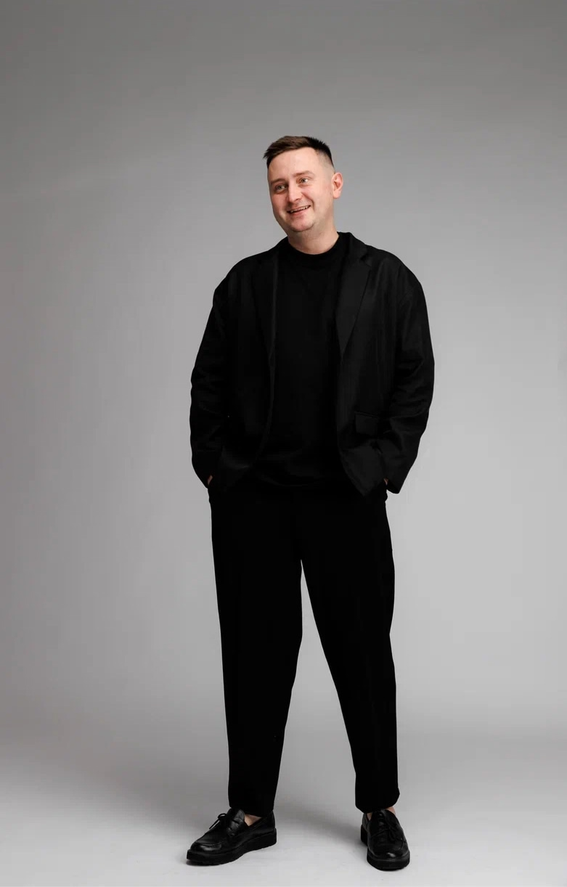
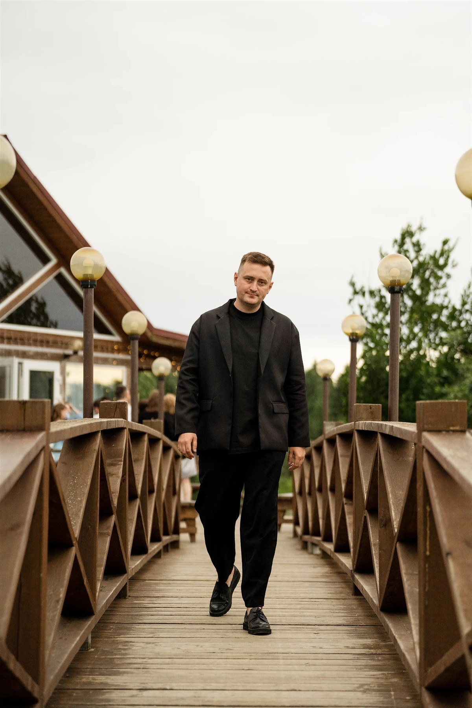
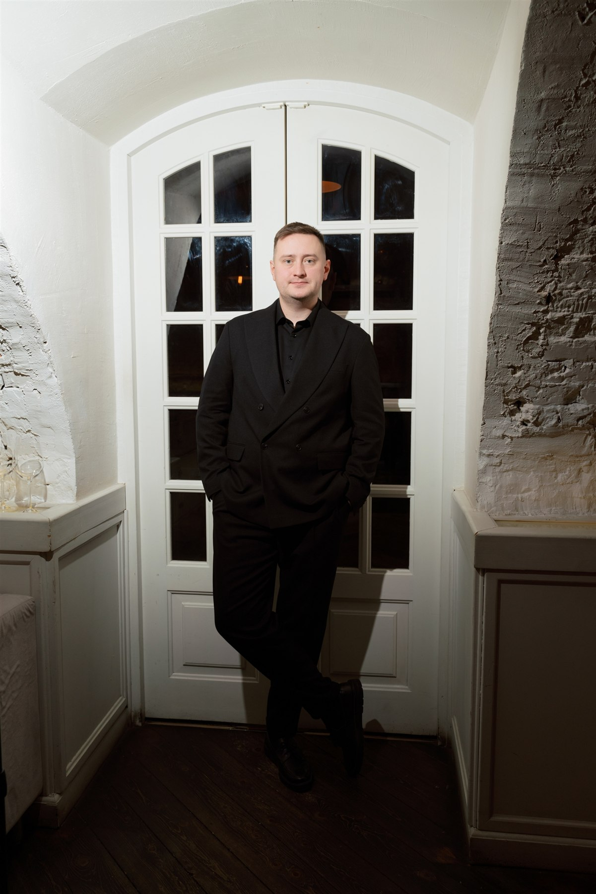

Свадьбы
Личная история пары, бережное внимание к близким и вечер без чужих сценариев.
Архангельск · Санкт-Петербург · Москва

О ведущем
Он создаёт пространство, в котором гостям легко общаться, смеяться и проживать важные моменты без неловкости и формальных пауз.
Смотреть профиль ВКонтакте
Профессионально. Легко. По-человечески.
Несколько сотен событий — от камерных свадеб до конференций, открытий и официальных приёмов. Этот опыт помогает быть точным в моменте, не теряя лёгкости.
Форматы
В программе — акцент на смехе и живом юморе, который рождается из людей и самого события.
Личная история пары, бережное внимание к близким и вечер без чужих сценариев.
Лёгкая программа, которая объединяет команду и сохраняет характер компании.
Дни рождения, юбилеи и камерные вечера с точной интонацией и живым общением.
Конференции, открытия и официальные приёмы с собранной подачей и ясным таймингом.

Говорят клиенты
01«Арсений, от компании Сбербанка хочу поблагодарить тебя и всю твою команду организаторов…»
Мария Емелина
02«Арсений проводил для нашей компании значимое мероприятие. Весь коллектив компании был в восторге…»
Надежда Осколкова
03«Арсений, я давно знала, что если в моей жизни случится какое-то важное событие, то именно тебя я позову на помощь!»
Катерина Кондратьева
Как всё происходит
Вы рассказываете о событии, гостях и атмосфере, которую хочется создать.
Собираем структуру вечера, вопросы, важные истории и детали.
Сверяются тайминг, участники, подрядчики и всё, что остаётся за кадром.
Программа живёт вместе с залом: спокойно меняет темп и остаётся естественной.
Дата · город · формат
05 / 05Начнём с даты и короткого разговора. Арсений ответит лично.